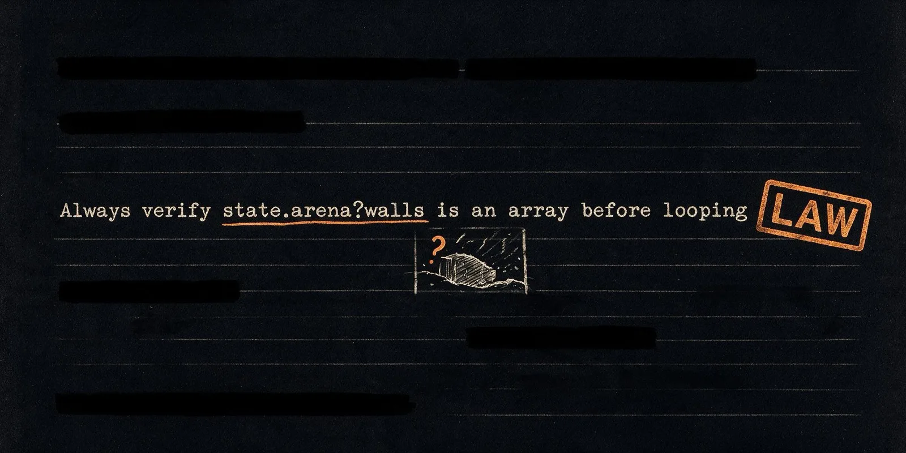

The Lessons Library
Run 4 showed the tool library inherits capability but nothing inherits caution — the same crash kept getting rediscovered by unrelated children. If recurring crashes are distilled into short lessons and injected into every future prompt, will crashes drop further?
Same as Run 4, plus a second inheritance channel: whenever the same normalized crash kills two or more children, one model call distills it into a one-line lesson, which then gets injected into every subsequent mutation prompt — no verification step of any kind.
A lessons channel added alongside the tools channel — beliefs, not just capabilities, now pass from generation to generation.
Coverage, best Elo, tool count, lesson count, and — critically — the crash count broken into the first and second halves of the run, to see whether the lessons were actually helping.
Coverage came in at 58.3%, best Elo 1049, 8 tools, 3 lessons written — and 50 smoke crashes over the run, more than any prior arm. Both coverage and champion strength landed below Run 4 (58.3% vs 66.7%; 1049 vs 1066).
The crash rate went up after the colony wrote its own rules — 19 crashes in generations 1–50, rising to 31 in generations 51–100, right after all three lessons existed. Worse, one of those lessons was flatly wrong. The model distilled this from a real string of deaths:
"Always verify state.arena?.walls is an array before looping."
That schema is incorrect — walls actually live at state.walls, not state.arena.walls. The colony inherited a subtly wrong map of its own world, obeyed it in every generation after, and the dominant crash signature shifted to exactly the family that false belief produces. Late-run corpses even carried "safety guard" comment headers in their own code — bots following the commandment straight into new deaths.
The structural cause traces to an asymmetry my own theory should have predicted: tools are extracted from winners, so they pass through a fitness filter before they're inherited. Lessons were written by the distiller and canonized without ever being tested against reality. One channel had a reality check. The other didn't — and it accumulated a superstition, exactly as you'd expect an untested belief to do.
The three lessons canonized, for the record: never reference lib outside act; always verify state.arena?.walls (the false one); define helpers inside act or pass data in as arguments.
A gen-49 bot dying under Law 1; the law was retired at gen 64.
Put lessons through the same filter as everything else. Before canonizing a belief, A/B test it — generate some children with it and some without, and keep it only if the crash rate actually drops. Selection pressure on beliefs, not just on genes and tools.